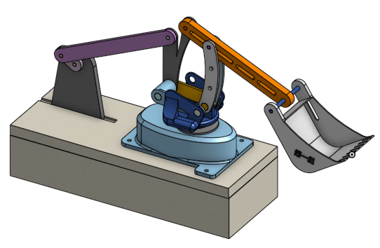

Week 10 Homework << Previous Next >> Issue_&_Solution
Mechanical_arm
- 第１３周由我們組員相繼畫出機械手臂中的各連桿以及其底座還有查詢機械手臂的做動原理還有機械手臂的規格。大概列出以下內容
- 做動方式有：
swing(主軸搖擺)
Main Arm(主臂向前推)
Actuator/Forearm(前臂升降)
- 軟體接收方式：
使用UART，由電腦發送資訊並且控制CPU來使我們機械手臂做動
- 第１４周我們討論關於機械手臂前面的機構，是要推板、夾爪還是挖鏟零件，還有我們機械手臂是採圓柱座標型的方式來做動，且運動的方向為六軸。
- 第１５周我們設計出機械手臂的初稿，在尚未加入任何連桿上的限制，先行模擬其運動的狀況，是有達到我們的理想運動狀況。並且擬定期末報告上的目錄配置。
- 第１６周開始將機械手臂初稿所組裝好的機構代到V-rep進行分析，並回報第一手狀況。將分析的狀況統整完後，進行第二次機械手臂的圖稿繪製。將所有資訊以及問題放到雲端協同的期末報告裡。
(在設計圖稿中的連結可查看關於每個版本的圖檔)
- 第１７周在這一周裡我們不斷的改良圖稿，主要是為了分析能更順暢且設定數值較單一且好理解。所以在這周我們圖稿繪製以來到第四次模擬版本。目前由分析座最後確認。
________________________________________________________________________________________________
因機械手臂是由很多關節連結並在平面或三度空間進行其運動或是線性的位移運動，因此我們在在主軸的連桿上（也就是Onshape Part 的前、上支架）添加了很多孔位，使我們的產品能在有限的平台空間上，藉由連桿與轉軸的變化使我們的手臂伸長或是縮短範圍。
________________________________________________________________________________________________
更詳細的內容請至PDF做查看
名稱：六軸機械手臂（實體連結在這）
- 第一次初稿-實體外型
描述：結合了機械手臂和挖土機的功能構造，已經構想好其運動方式。
- 第二次校稿-實體外型(增加基底和轉軸)
描述：因配合V-rep分析，故將連桿連接處加上轉軸，並增加灰色基底(避免在運動模擬挖鏟部分跑到地板以下看不到)。
- 第三次校稿-實體外型(增加曲柄連桿座)
描述：因第二次做動分析不慎理想，故在機構後方加上曲柄連桿，讓模擬能持續且循環。
- 第四次校稿-實體外型(隱藏下機底零件)
描述：因第三次機構設計，損失原來的設計原理，讓此機構無法旋轉，故我們將選轉軸移至基底裡面，並將基底做上下切割。
- 第五次最終版-實體外型(連桿改良)
描述：由於第四次分析出來，部分連桿無法MATCH，故我們改良了連桿的外型，並重新排列連桿的排列順序，好讓分析能合理化。

________________________________________________________________________________________________
分析步驟解說請至PDF做查看
- 第一次分析
描述：前後設一個旋轉軸、左右轉設一個旋轉軸、 產子那邊再設一個旋轉軸；但彼此無法達到連動關係，因為旋轉軸會各自一直持續逆時針或順時針旋轉如影片1，因此要等到達一定的位置後按暫停然後再調整，如影片2顯示。
影片1
影片2
- 第二次分析
描述：就像第14週的反向運動學v-rep的練習一樣，利用一個白球帶動整個手臂做動。
- 第三次分析(錯誤版)
描述：如影片箭頭所指的地方，我們在那邊設定Dummy外部連接，但影片做動時，卻沒有連接起來。
- 第三次分析(最終版)
描述：最後發現是排序有誤，以及Dummy外部連接設定數量跟位置也有錯誤，然後轉軸設定的位置是在分別設在，一個在曲柄連桿組，一個在基底，另一個是名為C3的旋轉軸上，最後成功做動，而位置的更動可以與上支影片做比較。
________________________________________________________________________________________________
- 機械手臂種類與原理
- 機械手臂外型設計參考
- 傳輸器UART
Week 10 Homework << Previous Next >> Issue_&_Solution